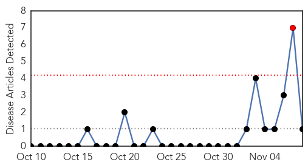
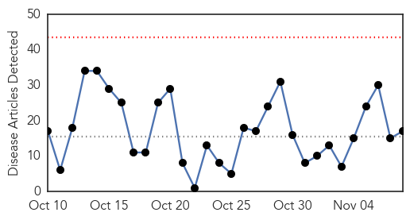
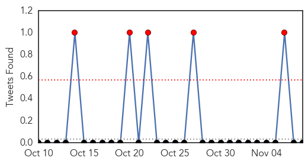
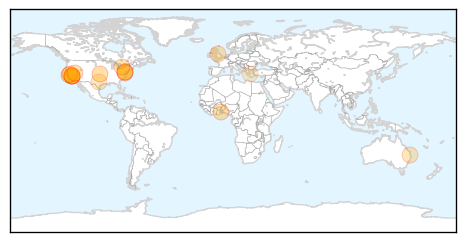
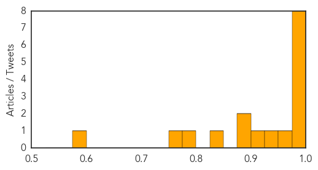

Mumps
30-Day Web Trend
1 alerts, 0 warnings

30-Day Twitter Trend
0 alerts, 0 warnings

Article Locations

Article Confidences

Top Articles:
Top Tweets:
-
No tweets found for Nov 08, 2015
Influenza
30-Day Web Trend
0 alerts, 0 warnings

30-Day Twitter Trend
2 alerts, 0 warnings

Article Locations
Article Confidences
Top Articles:
- 0.999
- CDPH Confirms First Flu Death of an Infant this Season
- 0.997
- Health officials urge flu shots after season’s first influenza death
- 0.996
- First Infant Flu Death Has Been Confirmed
- 0.996
- First Case of Flu in Maryland is Confirmed
- 0.995
- It’s time for snow, sweaters and sneezing
- 0.994
- First Case of Flu in Maryland is Confirmed
- 0.987
- California health officials announce 2 flu-related deaths; they urge widespread vaccination
- 0.984
- 2 flu-related deaths reported in California this week
- 0.959
- First Infant Death for Flu Season in California
- 0.943
- CDC Confirms First Infant Flu Death in California
- 0.901
- Ban on poultry partially lifted in Greater Accra
- 0.895
- Today's stories from newspapers in Flamborough
- 0.895
- Today's stories from newspapers in Flamborough
- 0.848
- Today's stories from newspapers in Caledon
- 0.777
- Flu spread prompts free vaccine
- 0.751
- November 8, 2015 Archives
- 0.587
- Researchers identify essential component of antiviral defense
Top Tweets:
-
No tweets found for Nov 08, 2015